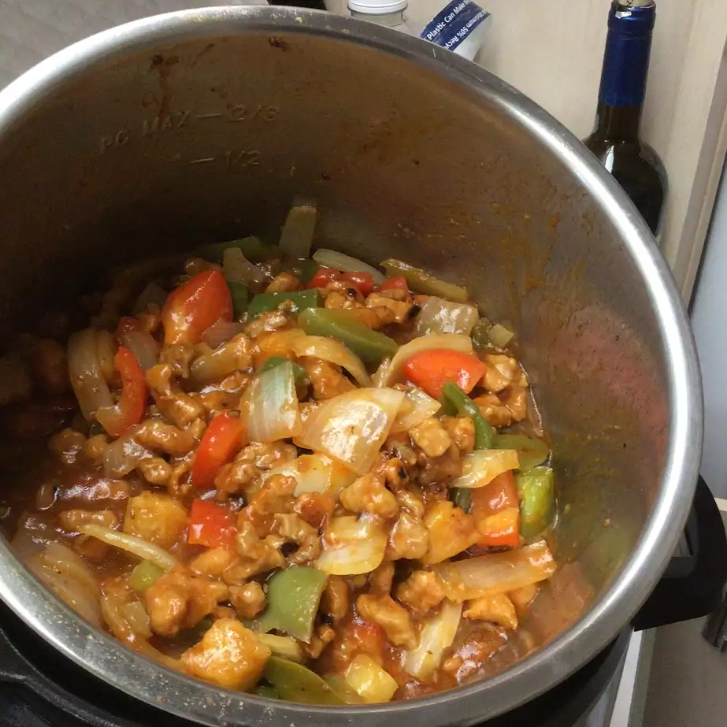

Instant Pot Sweet and Sour Pork

Description
Sweet and sour pork is a traditional and delicious Chinese dish. There's no need for takeout when you can make it with very little effort at home, and even better, in the Instant Pot®. Serve with rice.
Ingredients
- 1 tablespoon vegetable oil
- 1 pound boneless pork loin, cut into 3/4-inch cubes
- 1 1/4 cups water, divided
- 1/2 cup ketchup
- 1/3 cup rice vinegar
- 1/3 cup pineapple juice
- 2 tablespoons brown sugar
- 2 tablespoons low-sodium soy sauce
- 2 teaspoons minced fresh ginger
- 1 teaspoon minced garlic
- aluminum foil
- 1 onion vertically sliced
- 1 cup chopped fresh pineapple
- 1 red bell pepper, cut into large chunks
- 2 tablespoons cornstarch
- 1 tablespoon toasted sesame seeds (Optional)
Steps
- Turn on a multi-functional pressure cooker (such as an Instant Pot®) and select Saute function. Add oil and heat until hot. Add pork cubes, working in batches if necessary, and cook until browned on all sides, about 5 minutes. Return all the pork back to the pot and cancel Saute mode.
- Whisk together 3/4 cup water, ketchup, rice vinegar, pineapple juice, brown sugar, soy sauce, ginger, and garlic in a small bowl. Pour over pork and stir to combine.
- Close and lock the lid. Select high pressure according to manufacturer's instructions; set timer for 5 minutes. Allow 10 to 15 minutes for pressure to build.
- Release pressure using the natural-release method according to manufacturer's instructions, about 5 minutes. Release remaining pressure using the quick-release method. Unlock the lid and remove. Transfer pork to a plate using a slotted spoon. Cover with foil to keep warm.
- Select Saute mode and stir in onion, pineapple, and red and green bell peppers. Simmer until vegetables start to soften, 6 to 7 minutes.
- Whisk together cornstarch and remaining 1/2 cup water in a small bowl until smooth. Pour slurry into the pot. Cook, stirring constantly, until sauce has thickened to your preferred consistency, about 2 minutes. Return cooked pork back to the pot and heat until just warmed through. Garnish with sesame seeds.
Home